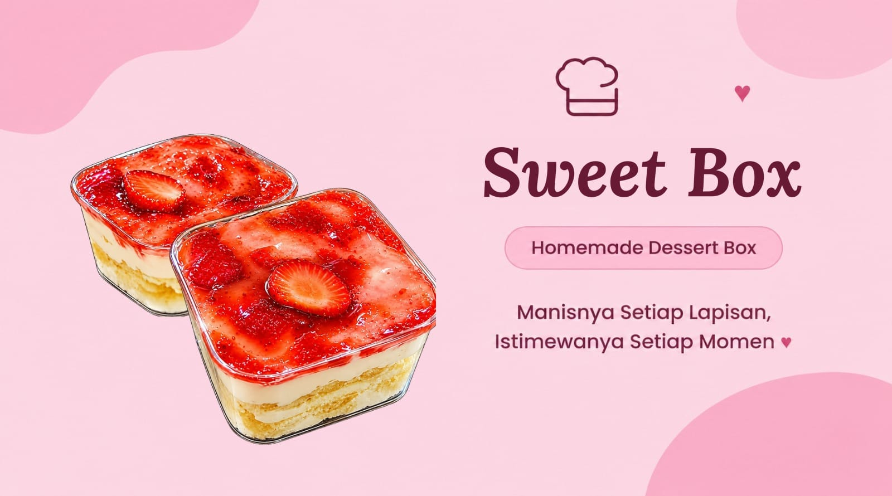

SELAMAT DATANG DI SWEET BOXSweet Box Sweet Moments, Sweet Memories!Dessert box homemade dengan rasa yang bikin hari lebih manis. HomemadeDibuat dengan perhatian pada kualitas dan kebersihan.
Banyak VarianCokelat, tiramisu, stroberi, dan keju.
PraktisCocok untuk camilan atau teman berkumpul.
Selamat datang di Sweet Box, sebuah usaha kuliner rumahan yang menghadirkan berbagai pilihan dessert box dengan cita rasa lezat, tampilan menarik, dan harga yang terjangkau. Sweet Box hadir untuk memberikan pengalaman menikmati makanan penutup yang menyenangkan bagi setiap kalangan. Kami percaya bahwa makanan manis bukan hanya sekadar hidangan, tetapi juga dapat menjadi pelengkap kebahagiaan dalam berbagai kesempatan. Oleh karena itu, kami menghadirkan dessert box dengan perpaduan bahan berkualitas dan rasa yang menggugah selera. Sweet Box merupakan usaha mikro, kecil, dan menengah (UMKM) yang berfokus pada penjualan makanan penutup berbentuk kotak atau dessert box. Produk kami dibuat dengan memperhatikan kualitas bahan, kebersihan proses pembuatan, serta keseimbangan rasa pada setiap lapisannya. Setiap produk dirancang agar memiliki tekstur lembut, rasa manis yang pas, dan tampilan yang menarik sehingga dapat dinikmati sendiri maupun bersama orang terdekat. Kami menyediakan beberapa pilihan rasa yang dapat disesuaikan dengan selera konsumen, mulai dari cokelat, tiramisu, keju, hingga stroberi. Setiap varian memiliki karakteristik rasa tersendiri sehingga pelanggan dapat memilih produk sesuai dengan keinginan. Selain itu, dessert box Sweet Box cocok dinikmati sebagai camilan sehari-hari, hidangan penutup setelah makan, maupun sebagai pilihan hadiah sederhana untuk keluarga dan teman. Salah satu keunggulan Sweet Box adalah konsep produk homemade yang mengutamakan kesegaran dan kualitas. Kami berusaha memberikan pelayanan yang ramah serta menjaga kepuasan pelanggan melalui produk yang dibuat dengan teliti. Harga yang ditawarkan juga dirancang agar dapat dijangkau oleh berbagai kalangan, termasuk pelajar, mahasiswa, pekerja, dan masyarakat umum. Melalui website ini, kami ingin memperkenalkan Sweet Box kepada masyarakat secara lebih luas. Pengunjung dapat mengetahui informasi mengenai usaha kami, melihat berbagai pilihan produk, mempelajari cara pemesanan, serta menemukan informasi kontak yang dapat dihubungi. Kami berharap Sweet Box dapat menjadi salah satu pilihan dessert favorit masyarakat dan terus berkembang menjadi usaha kuliner yang dikenal karena kualitas serta pelayanannya. Terima kasih telah mengunjungi website Sweet Box. Mari temukan rasa favoritmu dan nikmati manisnya setiap momen bersama produk kami! Nikmati kelezatan produk Sweet Box bersama keluarga dan teman-teman. |